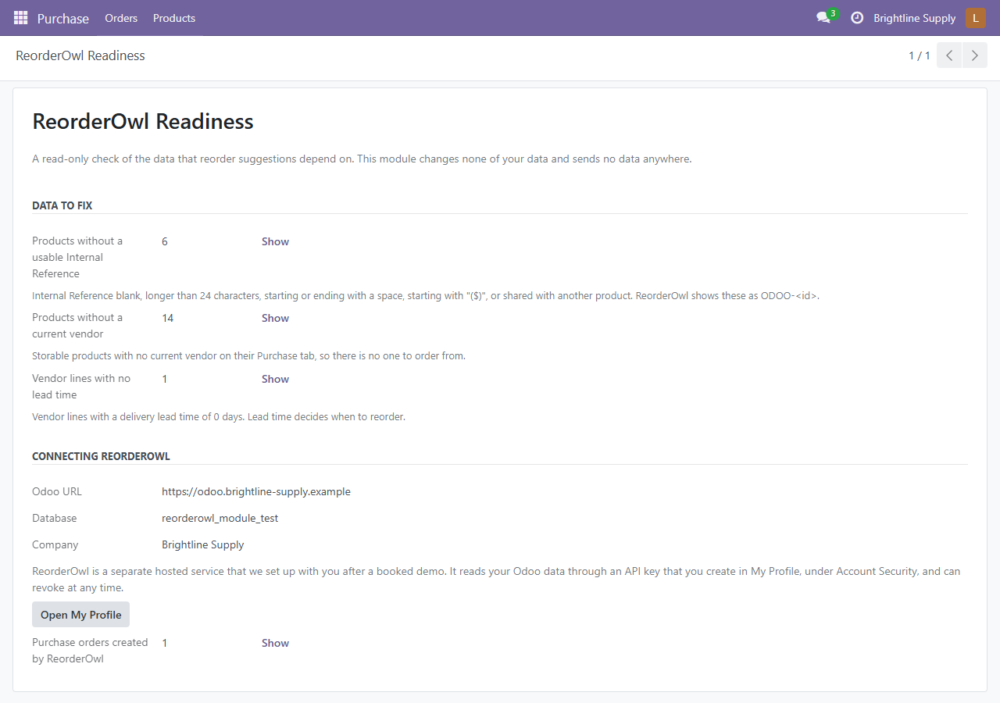
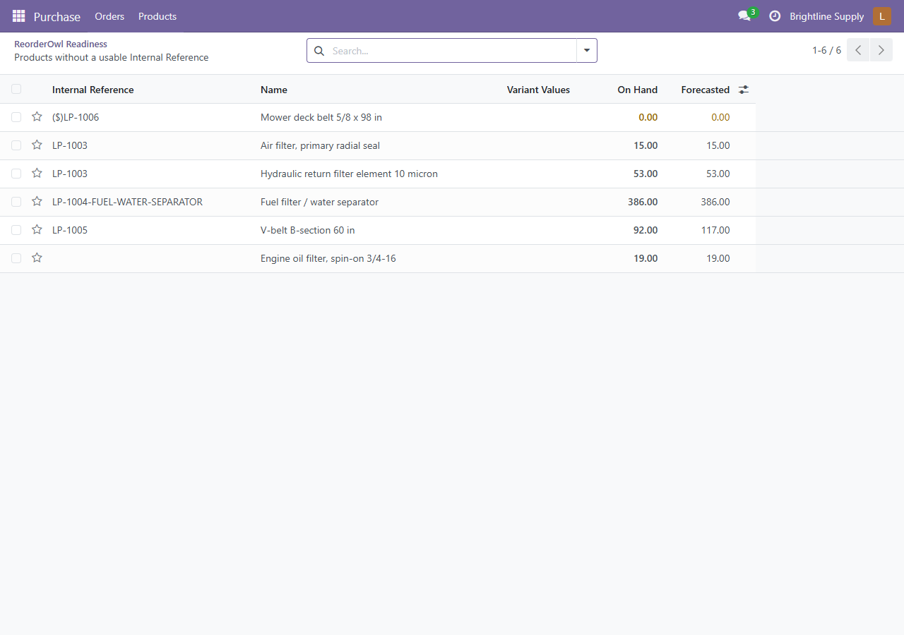

Reorder suggestions are only as good as the product codes, vendors and lead times behind them. This module adds one read-only screen, Purchase > Products > ReorderOwl Readiness, that counts the problems and opens each list so you can fix it in the normal Odoo screens.

Every count has a Show button that opens the matching products or vendor lines.

ReorderOwl is a separate hosted purchasing assistant from Lancaster Agentic. We set it up with you after a booked demo. It reads your Odoo data through an API key that you create in My Profile > Account Security and can revoke at any time. The screen shows the Odoo URL, database and company you will need, a button to open My Profile, and the purchase orders that ReorderOwl has created (their Source Document is "ReorderOwl").
This module is read-only. It changes none of your data, makes no outside connections and sends no data anywhere. You can use the checks without ReorderOwl.
Requires Purchase and Inventory (purchase_stock). Built for Odoo 18 and tested on Odoo 18 Community. Questions: alex@lancasteragentic.com